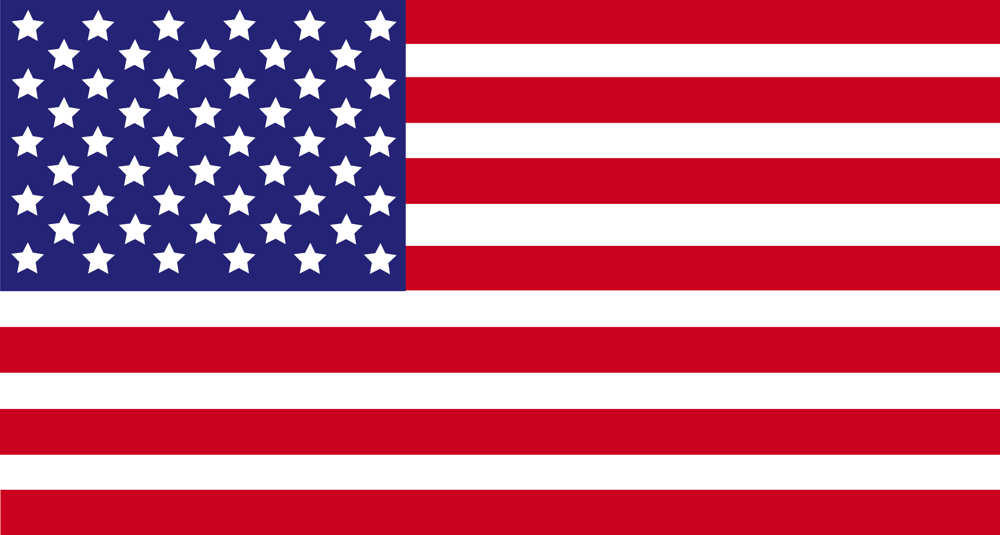

La reconnaissance du surf comme discipline olympique remonte bien avant 2020. En effet, le père du surf moderne Duke Kahanamoku, Hawaïen alors médaillé d'or olympique en natation, aurait en 1920 présenté son souhait au Comité international olympique de voir le surf faire partie des Jeux. Il va finalement faire son entrée au programme des Jeux olympiques de Tokyo de 2020 en tant que sport additionnel. La première compétition sera organisée dans l’océan Pacifique, sur le spot de Shidashita situé sur la côte de la préfecture de Chiba. Le surf devrait intégrer les disciplines paralympiques à partir des Jeux de Los Angeles 2028.
Surf une discipline récente ?
Duke Kahanamoku
C'est à Waikiki Beach qu'il s'est initié au surf et à la natation. Il pratiquait le surf, pratique ancestrale relatée pour la première fois par James Cook et qui avait ensuite été interdite par les missionnaires britanniques.
Caroline Marks
En août 2024, l’américaine Caroline Marks remporte la médaille d'or au jeux de Paris 2024.

Etats-Unis

Kauli Vaast
Champion olympique de surf Kauli Vaast est le premier surfeur français à remporter un titre olympique, titré en 2024 aux jeux de Paris.
France
Italo Ferreira
Champion olympique de surf le brésilien Italo Ferreira, titré en 2021 aux jeux de Tokyo, pour la première apparition du sport aux Jeux olympiques.
Brésil
Règles et techniques
Lors des Jeux Olympiques, chaque action des surfeurs est évaluée sous l'œil critique des juges. Ils recherchent des manœuvres radicales et maîtrisées, exécutées dans les sections critiques de la vague, tout en valorisant l'engagement, la difficulté, et une diversité technique. La notation, sur une échelle de 1 à 10, privilégie les deux meilleures vagues de chaque participant pour un total sur 20 par série, encourageant les athlètes à une sélection stratégique et à l'optimisation de chaque passage. Les JO de Paris 2024 mettent à l'épreuve la technicité, la stratégie, et l'adaptabilité des surfeurs via un format éliminatoire qui récompense la qualité des vagues choisies. Cette structure compétitive exige une approche réfléchie pour tirer le meilleur de conditions maritimes en perpétuel changement.
Alors que les Jeux Olympiques de 2024 approchent, la compréhension fine des règles ici exposées enrichira l'expérience de tous - des compétiteurs aux fans. Cette connaissance permet d'apprécier la complexité du surf de compétition, mettant en lumière chaque stratégie, chaque choix de vague, et les moments où talent et mer s'unissent.
Les Règles de Priorité Démystifiées :
La priorité dans le surf olympique est un élément décisif, offrant au surfeur le droit exclusif de prendre la prochaine vague. Ce système prévient les interférences entre les compétiteurs et encourage un fair-play essentiel.
Détermination de la priorité :
Au début de chaque série, la priorité n'est assignée à aucun surfeur. Dès qu'un surfeur attrape une vague, la priorité passe automatiquement aux autres compétiteurs en attente.
Gestion de la priorité :
Les surfeurs doivent user de stratégie pour choisir le moment idéal pour utiliser leur priorité. Une bonne utilisation peut leur permettre de sélectionner la vague parfaite, tandis qu'une mauvaise décision peut laisser passer une opportunité en or.
Pénalités pour interférence :
Si un surfeur viole les règles de priorité en prenant une vague qui n'est pas la sienne, il est pénalisé par une réduction de son score total, ce qui peut gravement affecter son classement dans la compétition.